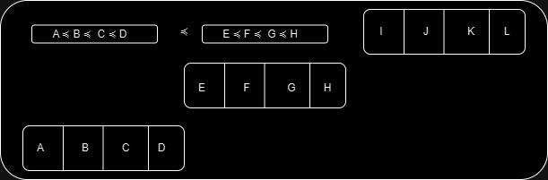
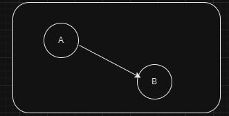
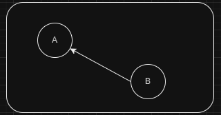
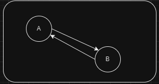
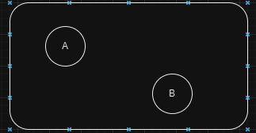
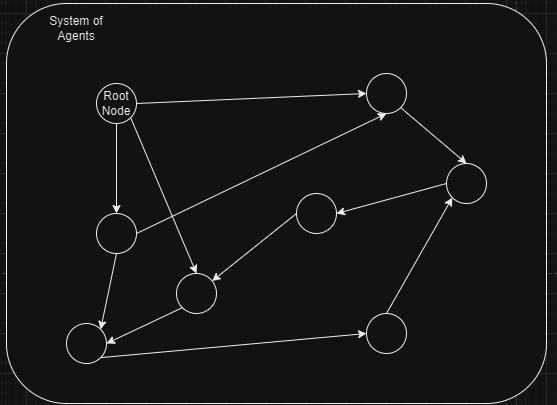
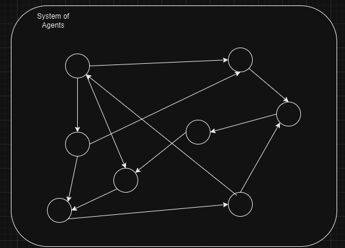
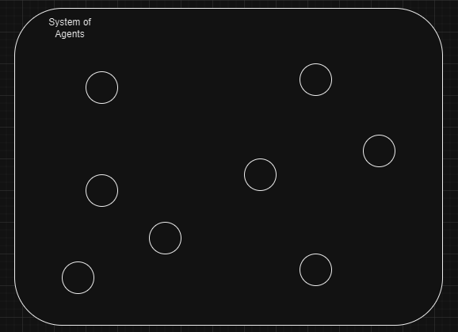

<title>Free Will, Responsibility, and Conceptual Confusion</title>
<style>
      /* Scoped styles for Blogger dark themes. No white table backgrounds. */
      .ep-post {
        color: inherit;
        background: transparent;
        font-family:
          system-ui,
          -apple-system,
          BlinkMacSystemFont,
          "Segoe UI",
          Roboto,
          Helvetica,
          Arial,
          sans-serif;
        line-height: 1.65;
        font-size: 1rem;
        max-width: 980px;
        margin: 0 auto;
      }

      .ep-post * {
        box-sizing: border-box;
      }

      .ep-post h1,
      .ep-post h2,
      .ep-post h3,
      .ep-post h4 {
        line-height: 1.25;
        margin: 1.8em 0 0.65em;
        color: inherit;
      }

      .ep-post h1 {
        font-size: 2rem;
        border-bottom: 1px solid
          color-mix(in srgb, currentColor 24%, transparent);
        padding-bottom: 0.35em;
      }

      .ep-post h2 {
        font-size: 1.45rem;
        border-bottom: 1px solid
          color-mix(in srgb, currentColor 16%, transparent);
        padding-bottom: 0.25em;
      }

      .ep-post h3 {
        font-size: 1.15rem;
      }

      .ep-post p {
        margin: 0.75em 0;
      }

      .ep-post ul,
      .ep-post ol {
        margin: 0.65em 0 0.9em 1.35em;
        padding: 0;
      }

      .ep-post li {
        margin: 0.22em 0;
      }

      .ep-post a {
        color: inherit;
        text-decoration: underline;
        text-underline-offset: 0.16em;
      }

      .ep-post strong {
        font-weight: 700;
      }

      .ep-post code {
        background: color-mix(in srgb, currentColor 10%, transparent);
        color: inherit;
        border: 1px solid color-mix(in srgb, currentColor 16%, transparent);
        border-radius: 0.25rem;
        padding: 0.08em 0.28em;
        font-family:
          ui-monospace, SFMono-Regular, Menlo, Consolas, "Liberation Mono",
          monospace;
        font-size: 0.92em;
      }

      .ep-post pre {
        background: color-mix(in srgb, currentColor 7%, transparent);
        color: inherit;
        border: 1px solid color-mix(in srgb, currentColor 18%, transparent);
        border-radius: 0.6rem;
        padding: 1rem;
        overflow-x: auto;
      }

      .ep-post pre code {
        background: transparent;
        border: 0;
        padding: 0;
      }

      .ep-post blockquote {
        margin: 1em 0;
        padding: 0.2em 0 0.2em 1em;
        border-left: 3px solid color-mix(in srgb, currentColor 32%, transparent);
        color: color-mix(in srgb, currentColor 88%, transparent);
      }

      /* =========================================================
   Readable Blogger tables
   ========================================================= */

      .ep-post .table-wrap {
        width: 100%;
        max-width: 100%;
        overflow-x: auto;
        overflow-y: hidden;
        -webkit-overflow-scrolling: touch;
        margin: 1.15em 0;
        border: 1px solid color-mix(in srgb, currentColor 16%, transparent);
        border-radius: 0.65rem;
        background: transparent !important;
      }

      .ep-post table {
        width: 100%;
        border-collapse: collapse;
        table-layout: fixed;
        margin: 1.15em 0;
        font-size: 0.9em;
        line-height: 1.45;
        color: inherit;
        background: transparent !important;
      }

      .ep-post .table-wrap table {
        margin: 0;
      }

      /* Wider tables can scroll, but text still wraps instead of becoming giant. */
      .ep-post table.wide-table {
        min-width: 760px;
      }

      .ep-post table.extra-wide-table {
        min-width: 920px;
      }

      /* Long tables should feel more like a reference sheet. */
      .ep-post table.long-table {
        font-size: 0.86em;
      }

      .ep-post thead,
      .ep-post tbody,
      .ep-post tr,
      .ep-post th,
      .ep-post td {
        background: transparent !important;
        color: inherit;
      }

      .ep-post th,
      .ep-post td {
        border: 1px solid color-mix(in srgb, currentColor 22%, transparent);
        padding: 0.48em 0.6em;
        vertical-align: top;
        white-space: normal;
        overflow-wrap: break-word;
        word-break: normal;
        hyphens: auto;
      }

      .ep-post th {
        font-weight: 700;
        text-align: left;
        background: color-mix(in srgb, currentColor 9%, transparent) !important;
      }

      .ep-post tr:nth-child(even) td {
        background: color-mix(in srgb, currentColor 4%, transparent) !important;
      }

      /* First columns are usually labels/terms. Keep them compact but readable. */
      .ep-post table:not(.extra-wide-table) th:first-child,
      .ep-post table:not(.extra-wide-table) td:first-child {
        width: 22%;
      }

      /* Two-column explanatory tables: give the explanation more room. */
      .ep-post table.two-col th:first-child,
      .ep-post table.two-col td:first-child {
        width: 28%;
      }

      .ep-post table.two-col th:nth-child(2),
      .ep-post table.two-col td:nth-child(2) {
        width: 72%;
      }

      /* Three-column reference tables. */
      .ep-post table.three-col th:first-child,
      .ep-post table.three-col td:first-child {
        width: 22%;
      }

      .ep-post table.three-col th:nth-child(2),
      .ep-post table.three-col td:nth-child(2) {
        width: 43%;
      }

      .ep-post table.three-col th:nth-child(3),
      .ep-post table.three-col td:nth-child(3) {
        width: 35%;
      }

      /* Keep short utility columns compact when manually applied. */
      .ep-post th.short,
      .ep-post td.short,
      .ep-post th.date,
      .ep-post td.date,
      .ep-post th.number,
      .ep-post td.number {
        width: 1%;
        white-space: nowrap;
      }

      /* Use on text-heavy columns when editing by hand later. */
      .ep-post th.long,
      .ep-post td.long,
      .ep-post th.description,
      .ep-post td.description,
      .ep-post th.notes,
      .ep-post td.notes {
        min-width: 14rem;
        line-height: 1.5;
        white-space: normal;
        overflow-wrap: break-word;
      }

      /* Dense option for especially long tables. */
      .ep-post table.dense th,
      .ep-post table.dense td {
        padding: 0.38em 0.5em;
        font-size: 0.96em;
        line-height: 1.42;
      }

      /* Math support */
      .ep-post .mjx-container {
        overflow-x: auto;
        overflow-y: hidden;
        max-width: 100%;
      }

      .ep-post .math-block {
        margin: 1em 0;
        overflow-x: auto;
      }

      @supports not (color: color-mix(in srgb, white 50%, black)) {
        .ep-post h1,
        .ep-post h2 {
          border-bottom-color: rgba(128, 128, 128, 0.35);
        }

        .ep-post th,
        .ep-post td {
          border-color: rgba(128, 128, 128, 0.35);
        }

        .ep-post th {
          background: rgba(128, 128, 128, 0.12) !important;
        }

        .ep-post tr:nth-child(even) td {
          background: rgba(128, 128, 128, 0.06) !important;
        }

        .ep-post code,
        .ep-post pre {
          background: rgba(128, 128, 128, 0.12);
          border-color: rgba(128, 128, 128, 0.25);
        }

        .ep-post .table-wrap {
          border-color: rgba(128, 128, 128, 0.25);
        }
      }

      /* Mobile: convert tables into readable cards instead of squeezed grids. */
      @media (max-width: 720px) {
        .ep-post {
          font-size: 0.98rem;
        }

        .ep-post h1 {
          font-size: 1.65rem;
        }

        .ep-post h2 {
          font-size: 1.28rem;
        }

        .ep-post .table-wrap {
          overflow-x: visible;
          border: 0;
          border-radius: 0;
          margin: 1.1em 0;
        }

        .ep-post table,
        .ep-post table.wide-table,
        .ep-post table.extra-wide-table,
        .ep-post table.long-table {
          display: block;
          width: 100%;
          min-width: 0;
          max-width: 100%;
          font-size: 0.92em;
          border: 0;
        }

        .ep-post thead {
          display: none;
        }

        .ep-post tbody,
        .ep-post tr,
        .ep-post td {
          display: block;
          width: 100% !important;
        }

        .ep-post tr {
          margin: 0 0 0.9em;
          border: 1px solid color-mix(in srgb, currentColor 20%, transparent);
          border-radius: 0.65rem;
          overflow: hidden;
          background: color-mix(
            in srgb,
            currentColor 3%,
            transparent
          ) !important;
        }

        .ep-post td {
          border: 0;
          border-bottom: 1px solid
            color-mix(in srgb, currentColor 14%, transparent);
          padding: 0.55em 0.7em;
          line-height: 1.5;
        }

        .ep-post td:last-child {
          border-bottom: 0;
        }

        .ep-post td::before {
          content: attr(data-label);
          display: block;
          margin-bottom: 0.18em;
          font-size: 0.78em;
          line-height: 1.25;
          font-weight: 700;
          letter-spacing: 0.02em;
          text-transform: uppercase;
          color: color-mix(in srgb, currentColor 72%, transparent);
        }
      }
    

      /* Phase 2 structural hierarchy */
      .ep-post .ep-part-banner {
        margin: 3.2em 0 1.1em;
        padding: 0.9em 1em;
        border-top: 2px solid color-mix(in srgb, currentColor 34%, transparent);
        border-bottom: 1px solid color-mix(in srgb, currentColor 18%, transparent);
        background: color-mix(in srgb, currentColor 4%, transparent);
      }
      .ep-post .ep-part-banner .ep-part-kicker {
        display: block;
        font-size: 0.78em;
        font-weight: 700;
        letter-spacing: 0.08em;
        text-transform: uppercase;
        opacity: 0.72;
        margin-bottom: 0.18em;
      }
      .ep-post .ep-part-banner .ep-part-title {
        display: block;
        margin: 0.08em 0 0.24em;
        padding: 0;
        border: 0;
        font-size: 1.72rem;
        line-height: 1.2;
        font-weight: 750;
      }
      .ep-post h2.ep-source-section {
        margin-top: 2.2em;
        padding-top: 0.35em;
        border-top: 1px solid color-mix(in srgb, currentColor 14%, transparent);
      }
      .ep-post .ep-toc {
        margin: 0.8em 0 2.2em;
      }
      .ep-post .ep-toc-part {
        margin: 1.15em 0;
      }
      .ep-post .ep-toc-part > p {
        margin-bottom: 0.25em;
        font-weight: 700;
      }
      .ep-post .ep-toc-part ul ul {
        margin-top: 0.25em;
        margin-bottom: 0.4em;
      }


      /* =========================================================
         Phase 4: editorial presentation system
         ========================================================= */
      .ep-post .chapter-lead {
        font-size: 1.04em;
        line-height: 1.68;
        margin: 0.9em 0 1.2em;
      }

      .ep-post .concept-callout,
      .ep-post .formula-callout,
      .ep-post .core-claim {
        margin: 1.05em 0;
        padding: 0.78em 0.95em;
        border-left: 4px solid color-mix(in srgb, currentColor 34%, transparent);
        background: color-mix(in srgb, currentColor 5%, transparent);
        border-radius: 0.35rem;
      }

      .ep-post .formula-callout {
        text-align: center;
        font-weight: 650;
        letter-spacing: 0.01em;
      }

      .ep-post ul.compact-grid,
      .ep-post ul.question-grid {
        list-style-position: outside;
        display: grid;
        grid-template-columns: repeat(2, minmax(0, 1fr));
        gap: 0.28em 1.6em;
        margin: 0.8em 0 1.05em 1.25em;
      }

      .ep-post ul.compact-grid li,
      .ep-post ul.question-grid li {
        break-inside: avoid;
        padding-right: 0.4em;
      }

      .ep-post .checkpoint-block,
      .ep-post .learning-insight-block {
        margin: 1.6em 0;
        padding: 0.35em 1em 0.85em;
        border: 1px solid color-mix(in srgb, currentColor 18%, transparent);
        border-radius: 0.7rem;
        background: color-mix(in srgb, currentColor 3%, transparent);
      }

      .ep-post .checkpoint-block > h2,
      .ep-post .checkpoint-block > h3,
      .ep-post .learning-insight-block > h3 {
        margin-top: 0.65em;
      }

      .ep-post table.comparison-table th:first-child,
      .ep-post table.comparison-table td:first-child {
        width: 32%;
      }

      .ep-post table.worksheet-table th:first-child,
      .ep-post table.worksheet-table td:first-child {
        width: 24%;
      }

      .ep-post table.glossary-table th:first-child,
      .ep-post table.glossary-table td:first-child {
        width: 18%;
      }

      .ep-post table.lens-table th:first-child,
      .ep-post table.lens-table td:first-child {
        width: 24%;
      }

      @media (max-width: 720px) {
        .ep-post ul.compact-grid,
        .ep-post ul.question-grid {
          grid-template-columns: 1fr;
          gap: 0.2em;
        }

        .ep-post .concept-callout,
        .ep-post .formula-callout,
        .ep-post .core-claim {
          padding: 0.7em 0.8em;
        }
      }


      /* =========================================================
         Phase 6: section-level coherence and navigation
         ========================================================= */
      .ep-post .chapter-guide {
        margin: 0.8em 0 1.25em;
        padding: 0.72em 0.9em;
        border: 1px solid color-mix(in srgb, currentColor 16%, transparent);
        border-radius: 0.55rem;
        background: color-mix(in srgb, currentColor 2.5%, transparent);
      }
      .ep-post .chapter-guide p {
        margin: 0.18em 0;
      }
      .ep-post .chapter-guide .chapter-path {
        font-size: 0.94em;
        opacity: 0.88;
      }
      .ep-post .chapter-transition {
        margin: 1.45em 0 0.4em;
        padding-top: 0.85em;
        border-top: 1px solid color-mix(in srgb, currentColor 16%, transparent);
        font-style: italic;
      }
      .ep-post .ep-part-banner .ep-part-summary {
        display: block;
        margin-top: 0.42em;
        max-width: 72rem;
        font-size: 0.92em;
        line-height: 1.5;
        font-weight: 400;
        opacity: 0.82;
      }

      .ep-post header.ep-part-banner {
        clear: both;
        position: relative;
      }
      .ep-post .checkpoint-block + header.ep-part-banner {
        margin-top: 3.8em;
      }
</style>
<script>
      window.MathJax = {
        tex: {
          inlineMath: [
            ["\\(", "\\)"],
            ["$", "$"],
          ],
          displayMath: [
            ["\\[", "\\]"],
            ["$$", "$$"],
          ],
          processEscapes: true,
        },
        options: {
          skipHtmlTags: [
            "script",
            "noscript",
            "style",
            "textarea",
            "pre",
            "code",
          ],
        },
      };
    </script>
<script async="" src="https://cdn.jsdelivr.net/npm/mathjax@3/es5/tex-chtml.js"></script>
<article class="ep-post">
<p>
  I’ve got to admit, I don’t understand all of the fuss about this concept. It
  seems like one of those topics philosophers like to argue about ad infinitum
  without any progress. Among non-philosophers, it seems there is a tendency to
  hastily reduce this to a binary distinction, while ignoring the fact that
  “Freedom” itself is a gradient and the “Will” is simply our capacity to
  interact with our environment in a non-arbitrary manner; it is a brute fact
  about ourselves. To me this is not a matter of classification, rather a
  question of degree under various conditions. If we think about the
  <a
    class="markup--anchor markup--p-anchor"
    data-href="https://en.wikipedia.org/wiki/Lexical_semantics"
    href="https://en.wikipedia.org/wiki/Lexical_semantics"
    rel="noopener"
    target="_blank"
    >semantics of the lexemes</a
  >
  involved in the phrase, it should be clear that “Freedom” is a type of
  degree-term or grade-term, with respect to a set of operational criteria. It
  can also be thought of as a rank-term, where each rank corresponds to an
  interval with gradeability from lower to higher; when the limit is reached
  there is a discontinuous jump into the higher rank. My whole point is that we
  ought to think of this concept in terms of a gradation; once we do this, we
  can have more productive conversations about the extent to which our “Will” is
  constrained, given a set of circumstances. This is what I have in mind:
</p>
<p></p>
<div class="separator" style="clear: both; text-align: center">
  <a
    href="img/image-1.jpg"
    style="margin-left: 1em; margin-right: 1em"
    ></a>
</div>
<br />My idea here is that on the lower left, we have a set of states
characterizing an agents freedom. Depending on a range of constraints, other
agents could be located in the top right region. Obviously the relations and
categorizations will be loose and fuzzy. I am also by no means, saying "this is
it". I just mean to say a conceptualization resembling this would allow us a
wider range of flexibility with our discourse about the topic.&nbsp;
<p></p>
<p class="graf graf--p" name="9510">
  I think a Systems Science perspective is useful when analyzing this concept.
  The discipline provides concepts that can help us differentiate between
  systems that have the property of “being free” and systems with varying
  degrees of teleology. It should be clear that we are not
  <a
    class="markup--anchor markup--p-anchor"
    data-href="https://en.wikipedia.org/wiki/Automaton"
    href="https://en.wikipedia.org/wiki/Automaton"
    rel="noopener"
    target="_blank"
    >automaton</a
  >; I merely take this for granted, it does not need to be argued for.
  Biological organisms are not
  <a
    class="markup--anchor markup--p-anchor"
    data-href="https://en.wikipedia.org/wiki/Finite-state_machine"
    href="https://en.wikipedia.org/wiki/Finite-state_machine"
    rel="noopener"
    target="_blank"
    >finite state machines</a
  >, despite being able to model them as such; one should never confuse the map
  with the territory. Biological organisms vary with respect to the degree in
  which their behavior can be conceived of as “deterministic”, but human
  behavior is inherently stochastic from the observers perspective. This is not
  to say that the behavior is inherently random; rather from the stand point of
  an observer, the set of all possible behavior in a given situation cannot be
  known with any level of reliability for extended periods of time without a
  sufficient degree of control (and even then, this can lead to spontaneous
  responses that cannot be known a-priori). Long run behavior is
  <a
    class="markup--anchor markup--p-anchor"
    data-href="https://en.wikipedia.org/wiki/Ergodicity"
    href="https://en.wikipedia.org/wiki/Ergodicity"
    rel="noopener"
    target="_blank"
    >non-ergodic</a
  >; the “time average” of one system is not equal to the ensemble average
  across every system. In simple terms, what I am saying is that human behavior
  looks like
  <a
    class="markup--anchor markup--p-anchor"
    data-href="https://en.wikipedia.org/wiki/Brownian_motion"
    href="https://en.wikipedia.org/wiki/Brownian_motion"
    rel="noopener"
    target="_blank"
    >Brownian motion</a
  >
  at times due to the very fact of our Will being non-deterministic. From a
  systems modeling perspective, there are no known exogenous factors that cause
  system dynamics to deviate in a predictable manner over long periods of time.
  Human behavior does not tend towards an equilibrium; rather there are rapid
  <a
    class="markup--anchor markup--p-anchor"
    data-href="https://en.wikipedia.org/wiki/Regime_shift"
    href="https://en.wikipedia.org/wiki/Regime_shift"
    rel="noopener"
    target="_blank"
    >regime shifts</a
  >&nbsp;at the macro level that occur from fundamental unstable divergent
  properties at the micro level. I bring all of this up because “lack of free
  will” discussions seem to center around certain levels of predictability of
  human behavior; if we take a closer look we find that human individuals and
  collectives can be incredibly unpredictable given a set of predictors, in
  non-arbitrary ways (non-arbitrary and deterministic are not synonyms).&nbsp;
</p>
<p class="graf graf--p" name="fc1c">
  What distinguishes us from automatons? Humans have various properties that can
  collectively be thought of as “The Will”. We have the property of drivenness;
  we are able to form and reformulate
  <a
    class="markup--anchor markup--p-anchor"
    data-href="https://en.wikipedia.org/wiki/Philosophy_of_desire"
    href="https://en.wikipedia.org/wiki/Philosophy_of_desire"
    rel="noopener"
    target="_blank"
    >desires</a
  >
  with respect to a set of information and stimuli. We are
  <a
    class="markup--anchor markup--p-anchor"
    data-href="https://en.wikipedia.org/wiki/Sentience"
    href="https://en.wikipedia.org/wiki/Sentience"
    rel="noopener"
    target="_blank"
    >sentient</a
  >; in other words, we can experience
  <a
    class="markup--anchor markup--p-anchor"
    data-href="https://en.wikipedia.org/wiki/Qualia"
    href="https://en.wikipedia.org/wiki/Qualia"
    rel="noopener"
    target="_blank"
    >qualia</a
  >. We are capable of
  <a
    class="markup--anchor markup--p-anchor"
    data-href="https://en.wikipedia.org/wiki/Goal_setting"
    href="https://en.wikipedia.org/wiki/Goal_setting"
    rel="noopener"
    target="_blank"
    >goal formation and goal setting</a
  >, given our qualia and desires. We are fundamentally
  <a
    class="markup--anchor markup--p-anchor"
    data-href="https://en.wikipedia.org/wiki/Agency_(philosophy)"
    href="https://en.wikipedia.org/wiki/Agency_%28philosophy%29"
    rel="noopener"
    target="_blank"
    >agents</a
  >
  who need not respond mechanistically to
  <a
    class="markup--anchor markup--p-anchor"
    data-href="https://en.wikipedia.org/wiki/Rational_agent"
    href="https://en.wikipedia.org/wiki/Rational_agent"
    rel="noopener"
    target="_blank"
    >normative standards of rationality</a
  >, compounding the predictability problem even more. All of this implies we
  have
  <a
    class="markup--anchor markup--p-anchor"
    data-href="https://plato.stanford.edu/entries/consciousness-intentionality/"
    href="https://plato.stanford.edu/entries/consciousness-intentionality/"
    rel="noopener"
    target="_blank"
    >consciousness and intentionality</a
  >; our behavior is directed to ends and we are aware of it. All of this means
  we have a degree of
  <a
    class="markup--anchor markup--p-anchor"
    data-href="https://plato.stanford.edu/entries/decision-capacity/"
    href="https://plato.stanford.edu/entries/decision-capacity/"
    rel="noopener"
    target="_blank"
    >decision making capacity</a
  >. This provides us with certain capabilities, such as the ability to
  arbitrarily interact and fundamentally change the environment we operate in to
  achieve these objectives. We can engage with complex texts and discover an
  entirely
  <a
    class="markup--anchor markup--p-anchor"
    data-href="https://en.wikipedia.org/wiki/Category:Interpretation_(philosophy)"
    href="https://en.wikipedia.org/wiki/Category:Interpretation_%28philosophy%29"
    rel="noopener"
    target="_blank"
    >new interpretation</a
  >
  that reorients these goals in light of these understandings. I take all of
  this to mean what we refer to when we utter “so and so has a Will”. Of course
  someone will respond to this by saying “But goals can be influenced by
  external pressure, or our drive can be subject to neurobiological failures”;
  but this person misses the point and is assuming that if we don’t have
  absolute control over every possible scenario where something external
  intervenes, then we somehow don’t have a Will and that its not free. Remember,
  I am establishing a minimal set of criteria; after that we can refer to all of
  the situations where this set can be constrained or interfered with. And at a
  more basic level, something that is causally unaffected by its environment is
  not "free". In order to act, an entity must be in relation to something else,
  which opens the possibility of causal influence. These relations are not
  deterministic, on my view determinism is obviously false or at the very least,
  has never been substantiated. It must be possible for an agent to be causally
  influenced by its environment, in order to even speak coherently about Free
  Will. What distinguishes an agent from an automata are the complex mechanisms
  inherent within the system that allow the agent to respond
  non-deterministically to external information. Biological life would simply
  not make sense on a reductive view of determinism. There would be no reason
  for entities to evolve. The very nature of life itself implies
  non-determinism. The fact that we are radically embodied and contextually
  bound provides the possibility for free agents to interact with such an
  environment.&nbsp;
</p>
<p class="graf graf--p" name="7b23">
  Freedom can be contrasted with
  <a
    class="markup--anchor markup--p-anchor"
    data-href="https://en.wikipedia.org/wiki/Controllability"
    href="https://en.wikipedia.org/wiki/Controllability"
    rel="noopener"
    target="_blank"
    >Controllability</a
  >. Suppose someone makes the claim that the sub-conscious determines
  (completely controls) conscious mental states. This would effectively be
  equivalent to stating that the conscious merely collapses or reduces to the
  sub-conscious. But as I noted above, I qualify an entity who has a “Will” as
  one who has the property of consciousness; so this remark is simply
  inapplicable because it does not refer to entities that can have a Will. By
  stating that the sub-conscious “determines” conscious mental states is to
  disagree, ontologically, with what a human is. The correct statement would be
  “the sub-conscious influences the conscious non-deterministically”; which
  would simply be a restatement of the fact that we have at least some degree of
  free will. But at this point, we are quarreling about the degree of freedom,
  or where we are on the freedom gradient; and whether it constitutes “true”
  freedom. So obviously, the question of whether we have a Will seems
  non-contentious; now we must decide whether it is entirely constrained by
  means of an external controller.&nbsp;
</p>
<p class="graf graf--p" name="eb1a">
  Another common retort might be that since the brain is algorithmic, running on
  a structure similar to a distributed graph, that the brain must be procedural
  and subsequently “deterministic”. This again, is simply a confusion; the
  interlocutor is merely describing how brain states come about, but a
  description of the inner functioning does not negate the idea that there is a
  Will, that the system as a whole uses these mechanisms to act freely within
  bounds on its environment. I think people think that to have a “Will” there
  must be something immaterial, in addition to, the processes associated with
  brain activity. This is a mistake; consciousness is an emergent property of
  this complex system. Saying that there are underlying processes is irrelevant.
  Postulating an invisible immaterial entity does not solve the problem; in fact
  I think it complicates the situation and is motivated by metaphysical folk
  theories that were generated during an era of ignorance. Likewise, someone
  might be tempted to claim that the existence of any constraint on this Will at
  all amounts to non-freedom; but again this is ridiculous. Constraints are
  enabling, and are necessary for an entity to persist. Consider that we
  necessarily live within a system. This is defined as a 6-tuple S =
  {C,N,I,B,K,H}, where C = components and their properties, N = network
  description of the components, I = description of the environment in which the
  system operates, B = Boundary conditions, K = set of interaction and state
  transition rules between components, and H = history of the various states
  (memory). The very fact that we live in a system, and are composed of systems,
  entails the existence of arbitrary relations that necessitate constraints
  between components and the system as a whole. Relation implies constraint; but
  constraint does not imply controllability. Relations also imply the
  possibility of new potentialities that the system might not have had access to
  at prior states. This could manifest in a new set of choices for an agent.
  Relations can also evolve in response to past decisions, but
  non-deterministically. See
  <a href="https://arxiv.org/abs/1201.2069"
    >No entailing laws, but enablement in the evolution of the biosphere</a
  >, for a richer description of indeterminism. The fact that we are situated
  within a set of relations and are composed of a set of process does not
  undermine the idea of free will unless "free will" is defined incoherently,
  which I believe it has been historically. All it means, more or less, is that
  there is no free lunch and that we are situated in a context more or less
  outside of our control, but with innate capabilities and dispositions to alter
  our surroundings to our liking.&nbsp;
</p>
<p class="graf graf--p" name="eb1a">
  A bit more on what I've mentioned before, about how the definition of this
  concept has been radically insufficient and has caused more confusion than
  anything. At a basic level, many people take "free will" to mean "ability to
  have acted otherwise in a given situation". This intuitive notion can be
  undermined by situations such as, falling off a cliff. One might say that we
  are determined by the physical laws to come smashing to the ground. Therefore,
  we are determined. This is obviously ridiculous, because presumably we had
  control prior to that situation, and presumably others can intervene to save
  us, given some technical constraints that are undetermined. So, there are
  local regions of determinism, but this does not generalize to global
  possibility spaces. But obviously, we aren't free in all situations. You can
  imagine scenarios where you may be fated to make a decision based on a
  historical chain of decisions, all pointing to a single node in a decision
  tree. Does this mean we are determined, globally? No, this is also ridiculous.
  This is why I've stressed the fact that these are gradable concepts and that
  people have been confused. This is my point, at the conceptual level,
  philosophers have not established coherency among the terms of discussion.
  Lets analyze a very stupid conception of free will that has plagued us for
  millennia. Libertarian free will is a philosophical concept within the broader
  debate on free will and determinism. It posits that human beings possess
  genuine free will, meaning they can make choices that are not determined by
  prior causes or external constraints. This view contrasts with determinism,
  which suggests that all events, including human decisions, are causally
  determined by preceding events. Both of these extremes simply miss the point,
  <i>they are not even false</i>.&nbsp;Libertarianism often emphasizes "agent
  causation," where the individual (the agent) is the originator of their
  actions. This means that the agent has the power to initiate actions
  independently of deterministic forces. But this is ridiculous, if actions are
  not causally influenced by prior causes, they may be random or arbitrary,
  which undermines the notion of control necessary for free will. The concept is
  incoherent. Lets take a look visually why its a contradiction, through the use
  of a <a href="https://en.wikipedia.org/wiki/Causal_graph">causal graph</a>.
  It's honestly kind of hard to even draw this since its a contradiction. so
  bear with me. Consider a simple two agent system. Agent A has Libertarian
  Freedom, while Agent B does not:
</p>
<div class="separator" style="clear: both; text-align: center">
  <a
    href="img/image-2.png"
    style="margin-left: 1em; margin-right: 1em"
    ></a>
</div>
<br />
<p></p>
<p class="graf graf--p" name="eb1a">
  But since we are all free agents, B must also have the ability to act without
  causal influence from its environment:
</p>
<div class="separator" style="clear: both; text-align: center">
  <a
    href="img/image-3.png"
    style="margin-left: 1em; margin-right: 1em"
    ></a>
</div>
<br />
<p></p>
<p class="graf graf--p" name="eb1a">
  But this would mean that causal arrows extend from both source nodes:
</p>
<p class="graf graf--p" name="eb1a"></p>
<div class="separator" style="clear: both; text-align: center">
  <a
    href="img/image-4.png"
    style="margin-left: 1em; margin-right: 1em"
    ></a>
</div>
<br /><br />
<p></p>
<p class="graf graf--p" name="eb1a">
  If A or B have genuine causal power over their environment, this would imply
  that it is impossible to draw a graph with nodes extending outward to other
  agents. So the graph would reduce to something with no edges:
</p>
<p class="graf graf--p" name="eb1a"></p>
<div class="separator" style="clear: both; text-align: center">
  <a
    href="img/image-5.png"
    style="margin-left: 1em; margin-right: 1em"
    ></a>
</div>
<br />This implies that Agents can have no causal influence on their
environment. But this contradicts the definition of "Agent Causation". The
system reduces to a collection unconnected nodes randomly moving around, since
it is impossible to draw a causal graph of a multi-agent system that does not
contain nodes with incoming causal arrows. There is one exception: the case
where the root node does not respond to exogenous influences, but can effect
every successor node. This can be visualized here:
<p></p>
<p class="graf graf--p" name="eb1a"></p>
<div class="separator" style="clear: both; text-align: center">
  <a
    href="img/image-6.png"
    style="margin-left: 1em; margin-right: 1em"
    ></a>
</div>
<br /><br />
<p></p>
<p class="graf graf--p" name="6f86">
  So in order for "Agent causation" to be coherent, there cannot be more than
  one node in a graph that has causal arrows pointed outward. This implies that
  it is possible for ONLY ONE agent to have libertarian free will. Therefore,
  humans as a whole, do not have libertarian free will. It is a contradiction to
  say that we do. In summary, it is impossible to draw a causal graph of a multi
  agent system with agents thought to have "Agent Causation". The only way this
  is possible, is with what I drew above, or a situation where there are no
  causal arrows emanating from nodes; which would mean that agents cannot
  causally act on one another, which contradicts the idea of agent causation. So
  there are two options, described below in these graphs:
</p>
<p class="graf graf--p" name="6f86"></p>
<div class="separator" style="clear: both; text-align: center">
  <a
    href="img/image-7.png"
    style="margin-left: 1em; margin-right: 1em"
    ></a>
</div>
<br />You can have a conception of free will that allows for the possibility of
agents being causally influenced by their environment. Or you can bite the
bullet, which would imply the causal graph looks like this:
<p></p>
<p class="graf graf--p" name="6f86"></p>
<div class="separator" style="clear: both; text-align: center">
  <a
    href="img/image-8.png"
    style="margin-left: 1em; margin-right: 1em"
    ></a>
</div>
<br />In this second scenario, we have a system of agents that look more like
random particles in a vacuum. Undetermined, yet completely random. This is
absurd to me. Therefore, I think we really ought to reconsider what we mean by
the term "Free Will".&nbsp;
<p></p>
<p class="graf graf--p" name="6f86">
  Anyways, back to the qualifier “Free” in “Free Will”. The existence of
  constraints qualifies the degree, rank, and grade of “Freedom” that our will
  has. But more importantly, the existence of a top-down controller (akin to a
  control system) sure seems to be equally important. One could say that if our
  choices were entirely constrained by a controlling mechanism, our “Will” would
  have the least amount of “Freedom” but would still have the capability of
  “Freedom” with the non-existence of such restrictions. So “Free Will” is a
  capability fundamental to conscious agents, allowed by the functioning of
  biological processes. Is our “Freedom”
  <a
    class="markup--anchor markup--p-anchor"
    data-href="https://en.wikipedia.org/wiki/Path_dependence"
    href="https://en.wikipedia.org/wiki/Path_dependence"
    rel="noopener"
    target="_blank"
    >path-dependent</a
  >? Yes. Do we make decisions like weak-learners who use
  <a
    class="markup--anchor markup--p-anchor"
    data-href="https://en.wikipedia.org/wiki/Reinforcement_learning"
    href="https://en.wikipedia.org/wiki/Reinforcement_learning"
    rel="noopener"
    target="_blank"
    >simple reward functions</a
  >? Presumably no. Economists have had quite the trouble reducing choice to
  utility maximization given a set of preferences and budget constraints. Do we
  respond to incentives? Yes, but incentives tend to be very unstable and
  unpredictable. Is the system
  <a
    class="markup--anchor markup--p-anchor"
    data-href="https://en.wikipedia.org/wiki/Controllability"
    href="https://en.wikipedia.org/wiki/Controllability"
    rel="noopener"
    target="_blank"
    >Controllable</a
  >? No. All of these considerations add and subtract to where we fall on the
  “Free” scale. I am not going to argue where we fall on the scale, I just
  wanted to show that I think its indisputable we “have” a “Will” (I quote the
  word “have” because even phrasing it as a Noun can lead to weird
  misunderstandings about our fundamental nature. It’s not something that we
  “acquire” or are “given”, it is simply a brute fact about ourselves) and that
  there is no know top-down controller necessitating decisions. Constraints will
  qualify the “Freedom” our “Will” can express, but this is a matter of
  degree.&nbsp;
</p>
<p class="graf graf--p" name="edc2">
  It should be clear by now that I view Free Will, or some approximation of the
  concept, as fundamental to humanity. However, I think the concept as
  understood historically and philosophically obscures what it means for us to
  have agency. Libertarian notions of Free Will are inherently connected with
  Theism. As I noted above, this concept is a contradiction in terms. But lets
  look at the one scenario where Agent Causation is possible: the situation
  where a maximum of one agent can have this sort of freedom. I also want to
  connect this to the notion of a Controller.
</p>
<p class="graf graf--p" name="edc2">
  Classical Theism assumes a Tri-Omni god: Omnipotent, Omniscient, and
  Omnibenevolent. The only agent who could possibly have libertarian freedom
  would be a god, since this entity can exert causal influence on its creation
  but the reverse is not possible. If this entity plans to act, it does so
  without error. Its plans are executed as intended. Therefore, its causal
  interventions are deterministic. Furthermore, an entity with unconstrained
  ability to act on the environment it has created, combined with omniscient
  knowledge, cannot be surprised by anything within its creation, since it would
  have anticipated it in advance. In other words, nothing can deviate from this
  plan, unless it were not omniscient or lacked the ability to execute its
  intentions. Given this characterization, its hard to see how this agent isn't
  a deterministic controller. This has always been intuitive to me, even prior
  to familiarizing myself with philosophy of religion. It turns out, there is a
  formalized argument noticing this tension (in my view, contradiction) between
  a libertarian notion of free will, and the existence of a deity described by
  classical theism. Before I present the argument, consider this parallel.&nbsp;
</p>
<p class="graf graf--p" name="edc2">
  Many theists assert that Atheism entails determinism, usually by conflating
  causal determinism with Atheism based on a misunderstanding of physics and
  non-belief (the fact that Atheism is not a world-view). According to
  <a href="https://en.wikipedia.org/wiki/Laplace%27s_demon">Laplace's demon</a>,
  the main view of classical determinism, if someone (the demon)
  <b><i>knows</i></b> the precise location and momentum of every atom in the
  universe, their past and future values for any given time are entailed and can
  be calculated from physical laws governing the universe. Make note of the
  condition "to know"; Laplace is asserting that the only thing limiting our
  ability to see this determinism, is the fact that we are not
  <a href="https://en.wikipedia.org/wiki/Omniscience">omniscient</a>. In other
  words, if we knew the relevant information, we could retrodict and predict the
  entire state space of the physical universe. This form of determinism assumes
  that:
</p>
<p class="graf graf--p" name="edc2" style="text-align: left"></p>
<ol style="text-align: left">
  <li>
    <b>The Universe is Governed by Physical Laws</b>: Nature operates through
    unchanging physical laws that determine the behavior of every system.
  </li>
  <li>
    <b>Complete Knowledge Implies Predictability</b>: If all information about a
    system is known, including initial conditions and governing laws, future and
    past states can theoretically be computed.
  </li>
  <li><b>Causal Closure</b>: Every physical event has a physical cause.</li>
  <li>
    <b>Absence of Randomness</b>: At least in classical mechanics, no randomness
    or indeterminacy exists; everything unfolds in a predictable chain of cause
    and effect.
  </li>
  <li>
    <b>Sufficient Information and Computational Power</b>: The hypothetical
    intellect would require infinite computational power and perfect knowledge
    of initial conditions, which is practically impossible (with limited human
    cognitive resources).
  </li>
</ol>
<p></p>
<p class="graf graf--p graf--empty" name="04aa">
  Notice how assumptions 2-5 seem to perfectly coincide with an entity
  characterized by classical theism. Nothing happens outside of an omnipotent
  entities control and everything is known by an omniscient entity, therefore
  <i style="font-weight: bold"
    >Laplace's demon is the entity described by classical theism, which means
    classical determinism is entailed by classical theism. </i
  >Libertarian free will is not only a contradiction in most circumstances, but
  the one situation where it is applicable, entails determinism for every other
  agent. The assumption that Libertarian Free Will is incompatible with Atheism,
  simply collapses on itself because classical theism is also incompatible with
  this notion of free will. As I've argued above, I think this is due to
  problematic conceptions of the terms "free" and "will". Once we realize this
  problem, it becomes clear (to me) that free will can only be compatible with
  the non-existence of a deity. Even if the classical theist rejects Libertarian
  Free Will, the characterization of a classical entity implies Laplace's demon.
  The only possible solution is to consider alternative notions of theism; such
  as <a href="https://en.wikipedia.org/wiki/Open_theism">Open Theism</a>. This
  critique applies to all forms of traditional theism, not just Calvinism.&nbsp;
</p>
<p class="graf graf--p graf--empty" name="04aa">
  This brings me to the argument that I wanted to present earlier. This falls
  under the class of philosophical problems known as
  <a href="https://plato.stanford.edu/entries/fatalism/">Fatalism</a>, the idea
  that situations or events were somehow inevitable. I touched on this concept
  indirectly earlier with the idea of local determinism. Obviously, I reject
  global fatalism. In the context of classical theism, many people have noted
  the problems of divine
  <a href="https://plato.stanford.edu/entries/free-will-foreknowledge/"
    >Foreknowledge and Free Will</a
  >, which I see to be crucially problematic for many conceptions of Theism. The
  <a href="https://plato.stanford.edu/entries/free-will-foreknowledge/"
    >argument for theological fatalism </a
  >is presented below informally, then formally:
</p>
<p class="graf graf--p graf--empty" name="04aa"></p>
<blockquote>
  <p class="graf graf--p graf--empty" name="04aa">
    For any future act you will perform, if some being infallibly believed in
    the past that the act would occur, there is nothing you can do now about the
    fact that he believed what he believed since nobody has any control over
    past events; nor can you make him mistaken in his belief, given that he is
    infallible. Therefore, there is nothing you can do now about the fact that
    he believed in a way that cannot be mistaken that you would do what you will
    do. But if so, you cannot do otherwise than what he believed you would do.
    And if you cannot do otherwise, you will not perform the act freely.
  </p>
</blockquote>
<p class="graf graf--p graf--empty" name="04aa"></p>
<ol style="text-align: left">
  <li>
    Yesterday God infallibly believed T. [Supposition of infallible
    foreknowledge]
  </li>
  <li>
    If E occurred in the past, it is now-necessary that E occurred then.
    [Principle of the Necessity of the Past]
  </li>
  <li>It is now-necessary that yesterday God believed T. [1, 2]</li>
  <li>
    Necessarily, if yesterday God believed T, then T. [Definition of
    “infallibility”]
  </li>
  <li>
    If p is now-necessary, and necessarily (p → q), then q is now-necessary.
    [Transfer of Necessity Principle]
  </li>
  <li>So it is now-necessary that T. [3,4,5]</li>
  <li>
    If it is now-necessary that T, then you cannot do otherwise than answer the
    telephone tomorrow at 9 am. [Definition of “necessary”]
  </li>
  <li>
    Therefore, you cannot do otherwise than answer the telephone tomorrow at 9
    am. [6, 7]
  </li>
  <li>
    If you cannot do otherwise when you do an act, you do not act freely.
    [Principle of Alternate Possibilities]
  </li>
  <li>
    Therefore, when you answer the telephone tomorrow at 9 am, you will not do
    it freely. [8, 9]
  </li>
</ol>
<p></p>
<p class="graf graf--p graf--empty" name="04aa">
  The main idea is that foreknowledge and omniscience are incompatible with free
  will. As I've alluded to above, I think omnipotence further complicates this
  problem, although its not formally acknowledged in this particular
  argument.&nbsp;
</p>
<p class="graf graf--p graf--empty" name="04aa">
  I'll note that there have been responses to this argument (see the SEP article
  linked above). Many of them fall under the category of "compatibilism", which
  is the idea that determinism and freedom are somehow compatible. Many atheists
  are compatibilists as well. They think that the universe is "determined" but
  free agents can still act freely. It should be obvious that I hold to
  incompatibilism. I think that, if determinism were true, then it would be hard
  to see how we are free (although maybe there would be a convincing argument
  out there not yet discovered, who knows). But I think determinism is obviously
  false and we need to really rethink our notions of causality and agency. I
  also think that every compatibilist argument presented in the context of
  theological fatalism are deeply unconvincing and that if theism were true,
  determinism is true. My approach is somewhat of a
  <a href="https://en.wikipedia.org/wiki/Here_is_one_hand">Moorean Shift</a>; it
  is obvious determinism is false, therefore theism (as traditional conceived)
  must be false. This is a "<a
    href="https://en.wikipedia.org/wiki/Argument_from_free_will"
    >Free will argument for the nonexistence of God</a
  >", which I think is quite plausible but needs more elaboration. I'll give one
  example of a response to theological fatalism that is ridiculously
  uncompelling.
  <a
    href="https://ruminations.blog/2018/08/28/the-mistake-in-theological-fatalism/"
    >Many theists</a
  >
  will say the following:
</p>
<p class="graf graf--p graf--empty" name="04aa"></p>
<blockquote>
  <p class="graf graf--p graf--empty" name="04aa">
    God knows what we will choose, but so long as his knowledge is not a cause
    of our choice our will is free within its constrained perspective.
  </p>
  <p class="graf graf--p graf--empty" name="29c1"></p>
</blockquote>
<p class="graf graf--p graf--empty" name="29c1">
  This is one of those responses where we must ask ourselves "did this person
  even read the argument?". Yes, knowledge does not cause the choice, but god
  knowing what we will choose, still implies we could not choose to do
  otherwise. This simply misses the point of the entire argument. Also, earlier
  I mentioned that omnipotence complicates the issue. I think its apparent here
  because god engineered the possibility space in this given scenario, but since
  god has a will of his own that deterministically manifests, the set of options
  must have been illusory.&nbsp;
</p>
<p class="graf graf--p graf--empty" name="29c1">
  The topic of free will is interesting because I think whatever conclusion you
  draw depends on how you conceptualize modality, causality, and time, which are
  interesting topics by their very nature. I think that this contentious topic
  is a function of our misunderstanding of these more primitive concepts. Part
  of my motivation for writing this was due to peoples misunderstanding of
  "scientific laws" being somehow binding across all levels, upwards through the
  system of systems characterizing reality. One thing I didn't mention was how
  free will overlaps with adjacent philosophical topics such as moral
  responsibility. I think many theists very unfairly mischaracterize non-belief
  by attributing determinism, and subsequently a lack of moral accountability,
  to be some inherent quality of being an atheist. I mentioned in previous posts
  this fear mongering that serves to retain believers and leads to demonization
  of non-believers. So despite the Free Will debate being somewhat of a
  <a href="https://en.wikipedia.org/wiki/Language_game_(philosophy)"
    >philosophical language game</a
  >, it has nevertheless initiated interesting lines of inquiry concerning some
  our most fundamental presumptions. I personally like the topic because I am
  interested in Decision Theory, and more broadly, how people make choices and
  rationality.&nbsp;
</p>
<p class="graf graf--p graf--empty" name="29c1">
  Below are some links to resources I've engaged with:
</p>
<p class="graf graf--p graf--empty" name="29c1">General Resources:</p>
<ol class="postList">
  <li class="graf graf--li" name="d96d">
    <a
      class="markup--anchor markup--li-anchor"
      data-href="https://fs.blog/simone-de-beauvoir-ethics-freedom/"
      href="https://fs.blog/simone-de-beauvoir-ethics-freedom/"
      rel="noopener"
      target="_blank"
      >Simone de Beauvoir ethics of freedom</a
    >
  </li>
  <li class="graf graf--li" name="135c">
    <a
      class="markup--anchor markup--li-anchor"
      data-href="https://plato.stanford.edu/entries/beauvoir/#EthiAmbiBadFaitAppeArti"
      href="https://plato.stanford.edu/entries/beauvoir/#EthiAmbiBadFaitAppeArti"
      rel="noopener"
      target="_blank"
      >Existentialist Freedom</a
    >
  </li>
  <li class="graf graf--li" name="135c">
    <a
      href="https://www.researchgate.net/publication/272302948_Generic_Agency_Theory_Cybernetic_Orders_and_New_Paradigms"
      >Generic Agency Theory, Cybernetic Orders and New Paradigms</a
    >
  </li>
  <li class="graf graf--li" name="135c">
    <a href="https://en.wikipedia.org/wiki/Autonomous_agency_theory"
      >Autonomous Agency Theory</a
    >
  </li>
  <li class="graf graf--li" name="135c">
    <a href="https://ieeexplore.ieee.org/document/7821599"
      >Understanding autonomous agents: A cybernetics and systems science
      perspective</a
    >
  </li>
  <li class="graf graf--li" name="135c">
    <a href="https://en.wikipedia.org/wiki/Cybernetics">Cybernetics</a>
  </li>
  <li class="graf graf--li" name="135c">
    <a href="http://pespmc1.vub.ac.be/AGENT.html">Agents</a>
  </li>
  <li class="graf graf--li" name="135c">
    <a href="https://link.springer.com/chapter/10.1007/978-3-031-44685-6_15"
      >A Cybernetic Perspective of Agent–Environment Relations: From
      Interactions to Meanings</a
    >
  </li>
  <li class="graf graf--li" name="135c">
    <a href="https://ieeexplore.ieee.org/document/4108487"
      >Agent-based Organizational Cybernetic Approach to Organizational
      Learning</a
    >
  </li>
  <li class="graf graf--li" name="135c">
    <a
      href="https://citeseerx.ist.psu.edu/document?repid=rep1&amp;type=pdf&amp;doi=6a55a2cbdc832666b3d82c6a04883cf6e7122eb9"
      >A Cybernetic Architecture of Practical Reasoning Agent</a
    >
  </li>
  <li class="graf graf--li" name="135c">
    <a href="https://link.springer.com/chapter/10.1007/978-3-540-45012-2_16"
      >A Cybernetic Approach to the Modeling of Agent Communities</a
    >
  </li>
  <li class="graf graf--li" name="135c">
    <a
      href="https://matteocapucci.wordpress.com/2021/06/21/open-cybernetic-systems-ii-parametrised-optics-and-agency/"
      >Open cybernetic systems II: parametrised optics and agency</a
    >
  </li>
  <li class="graf graf--li" name="135c">
    <a href="https://philpapers.org/rec/PICWIA-2"
      >What Is Agency? A View from Science Studies and Cybernetics</a
    >
  </li>
  <li class="graf graf--li" name="135c">
    <a href="https://en.wikipedia.org/wiki/Intelligent_agent"
      >Intelligent Agent</a
    >
  </li>
  <li class="graf graf--li" name="135c">
    <a href="https://en.wikipedia.org/wiki/Software_agent">Software Agent</a>
  </li>
  <li class="graf graf--li" name="135c">
    <a href="https://en.wikipedia.org/wiki/Agency_%28philosophy%29"
      >Agency (Philosophy)</a
    >
  </li>
  <li class="graf graf--li" name="135c">
    <a href="https://en.wikipedia.org/wiki/Agency_%28psychology%29"
      >Agency (Psychology)</a
    >
  </li>
  <li class="graf graf--li" name="135c">
    <a href="https://en.wikipedia.org/wiki/Agent_%28economics%29"
      >Agency (Economics)</a
    >
  </li>
  <li class="graf graf--li" name="135c">
    <a href="https://en.wikipedia.org/wiki/Category:Multi-agent_systems"
      >Multi Agent Systems</a
    >
  </li>
  <li class="graf graf--li" name="135c">
    <a href="https://pmc.ncbi.nlm.nih.gov/articles/PMC6987297/"
      >Reactive, Proactive, and Inductive Agents: An Evolutionary Path for
      Biological and Artificial Spiking Networks</a
    >
  </li>
  <li class="graf graf--li" name="135c">
    <a href="https://link.springer.com/article/10.1007/s00426-009-0241-3"
      >Intentional action: from anticipation to goal-directed behavior</a
    >
  </li>
  <li class="graf graf--li" name="135c">
    <a href="https://philpapers.org/re">The Ontology of Social Agency</a>
  </li>
  <li class="graf graf--li" name="135c">
    <a
      href="https://larvalsubjects.wordpress.com/2010/07/31/an-ontology-of-agents/"
      >An Ontology of Agents</a
    >
  </li>
  <li class="graf graf--li" name="135c">
    <a href="https://scholarworks.calstate.edu/concern/publications/n870zs98w"
      >The Ontology of Agency in the Light of Deterministic Causation: A
      Folk-Psychological Study</a
    >
  </li>
  <li class="graf graf--li" name="135c">
    <a href="https://philarchive.org/rec/PORTOO-6"
      >The Ontology of Group Agency</a
    >
  </li>
  <li class="graf graf--li" name="135c">
    <a
      href="https://www.frontiersin.org/journals/psychology/articles/10.3389/fpsyg.2013.00058/full"
      >Embodied Cognition is not What you Think</a
    >
  </li>
  <li class="graf graf--li" name="135c">
    <a href="https://philpapers.org/rec/TSETNB"
      >The Neural Basis of Free Will: Criterial Causation</a
    >
  </li>
  <li class="graf graf--li" name="135c">
    <a href="https://en.wikipedia.org/wiki/Freedom_Evolves">Freedom Evolves</a>
  </li>
</ol>
<div>Debates &amp; Discussions</div>
<div>
  <ol class="postList">
    <li class="graf graf--li" name="135c">
      <a href="https://youtu.be/xOvu5mmTrmg?si=PMFMVwHgMRd1rDAf"
        >Does Free Will Exist? | Sapolsky vs. Huemer Debate Review</a
      >
    </li>
    <li class="graf graf--li" name="f06c">
      <a
        class="markup--anchor markup--li-anchor"
        data-href="https://youtu.be/U8ds1Mo9YCg?si=Ur_0rzRvzR-nKOEm"
        href="https://youtu.be/U8ds1Mo9YCg?si=Ur_0rzRvzR-nKOEm"
        rel="noopener"
        target="_blank"
        >Do Human Brains Have Free Will? | Episode 609 | Closer To Truth</a
      >
    </li>
    <li class="graf graf--li" name="bfd1">
      <a
        class="markup--anchor markup--li-anchor"
        data-href="https://youtu.be/-OJSbwP-GnY?si=TYqbS2Hwi8a8wUCZ"
        href="https://youtu.be/-OJSbwP-GnY?si=TYqbS2Hwi8a8wUCZ"
        rel="noopener"
        target="_blank"
        >The Mind, Consciousness &amp; Free Will: A conversation with Peter
        Tse</a
      >
    </li>
    <li class="graf graf--li" name="7c2e">
      <a
        class="markup--anchor markup--li-anchor"
        data-href="https://youtu.be/OtTh0YPVqnQ?si=V9EobMPq8fdAumPN"
        href="https://youtu.be/OtTh0YPVqnQ?si=V9EobMPq8fdAumPN"
        rel="noopener"
        target="_blank"
        >Does God Know Everything? | Episode 1510 | Closer To Truth</a
      >
    </li>
    <li class="graf graf--li" name="55b7">
      <a
        class="markup--anchor markup--li-anchor"
        data-href="https://youtu.be/0bEBFdTfHbg?si=v7bgzMt0oMp9EStE"
        href="https://youtu.be/0bEBFdTfHbg?si=v7bgzMt0oMp9EStE"
        rel="noopener"
        target="_blank"
        >Can Free Will Survive God’s Foreknowledge? | Episode 1412 | Closer To
        Truth</a
      >
    </li>
    <li class="graf graf--li" name="4b61">
      <a
        class="markup--anchor markup--li-anchor"
        data-href="https://youtu.be/Z9EeVRD43qA?si=s_ZhE_6zEOOUnHjP"
        href="https://youtu.be/Z9EeVRD43qA?si=s_ZhE_6zEOOUnHjP"
        rel="noopener"
        target="_blank"
        >If God Knows the Future, What is Free Will? | Episode 710 | Closer To
        Truth</a
      >
    </li>
    <li class="graf graf--li" name="d6be">
      <a
        class="markup--anchor markup--li-anchor"
        data-href="https://youtu.be/FPooWlsJRZY?si=x0FFpNwI4bmkoIIO"
        href="https://youtu.be/FPooWlsJRZY?si=x0FFpNwI4bmkoIIO"
        rel="noopener"
        target="_blank"
        >Goofy arguments about free will</a
      >
    </li>
    <li class="graf graf--li" name="3f1b">
      <a
        class="markup--anchor markup--li-anchor"
        data-href="https://youtu.be/gVXI19vYhsQ?si=46lwuFuMACtcvxa8"
        href="https://youtu.be/gVXI19vYhsQ?si=46lwuFuMACtcvxa8"
        rel="noopener"
        target="_blank"
        >The Problems with Omniscience: Dilemmas of an All Knowing God</a
      >
    </li>
    <li class="graf graf--li" name="8bfc">
      <a
        class="markup--anchor markup--li-anchor"
        data-href="https://youtu.be/vFfh1cSZ7Zc?si=ZA92U87H0cIcizHZ"
        href="https://youtu.be/vFfh1cSZ7Zc?si=ZA92U87H0cIcizHZ"
        rel="noopener"
        target="_blank"
        >Divine Puppetry</a
      >
    </li>
    <li class="graf graf--li" name="3a37">
      <a
        class="markup--anchor markup--li-anchor"
        data-href="https://youtu.be/gt5q72lRA2g?si=NQfHZPjMTpMsG_-c"
        href="https://youtu.be/gt5q72lRA2g?si=NQfHZPjMTpMsG_-c"
        rel="noopener"
        target="_blank"
        >The Many problems of Prayer</a
      >
    </li>
    <li class="graf graf--li" name="3a37">
      <a href="https://youtu.be/a_bl11MNqAM?si=UIT7EfMWFI1oqKQ5"
        >BS 213 Kevin Mitchell explores Free Will</a
      >
    </li>
    <li class="graf graf--li" name="3a37">
      <a href="https://youtu.be/CPQShSo1p5s?si=cY2-FOVTQeE9wl2R"
        >Mindscape 281 | Samir Okasha on the Philosophy of Agency and
        Evolution</a
      >
    </li>
    <li class="graf graf--li" name="3a37">
      <a href="https://youtu.be/rOHJ_oZTdqQ?si=Ke_WGt1Hpii9u8sB"
        >Roy Baumeister - Big Questions in Free Will</a
      >
    </li>
    <li class="graf graf--li" name="3a37">
      <a href="https://youtu.be/klvNS83jUoc?si=DbHdWT3CUv_a1F4g"
        >Dean Zimmerman - Does God's Knowledge Eliminate Free Will?</a
      >
    </li>
    <li class="graf graf--li" name="3a37">
      <a href="https://youtu.be/ryOg-emhJJs?si=pRazvf-t6ZZe2bL7"
        >Barry Smith - Do We Really Have Free Will?</a
      >
    </li>
    <li class="graf graf--li" name="3a37">
      <a href="https://youtu.be/Pfc3eQgnI90?si=EWet7RQzszRyIrLr"
        >Walter Sinnott-Armstrong - Philosophy of Free Will</a
      >
    </li>
    <li class="graf graf--li" name="3a37">
      <a href="https://youtu.be/m246uxD_9Sw?si=CcIPJILeYprFP184"
        >Does God's Knowledge Ruin Free Will? | Episode 1312 | Closer To
        Truth</a
      >
    </li>
    <li class="graf graf--li" name="3a37">
      <a href="https://youtu.be/mrsn7ljHHzw?si=yWCxhfn-lfQ3snj4"
        >Free Will, Consciousness, Psychedelics, Dreams &amp; AI - Karl Friston
        | Podcast EP 25</a
      >
    </li>
    <li class="graf graf--li" name="3a37">
      <a href="https://youtu.be/gxpbvE8V0Dg?si=YEWaAiafPbXgvOjy"
        >The Evolution of Agency</a
      >
    </li>
    <li class="graf graf--li" name="3a37">
      <a href="https://youtu.be/rntqmQLcKkk?si=Cn0dVidFrKw3rytl"
        >Kevin Mitchell - The Evolution of Selfhood, Agency and Control</a
      >
    </li>
    <li class="graf graf--li" name="3a37">
      <a href="https://youtu.be/V9Y1Q8vhX5Y?si=bvNoo6Js-Q8jYtwf"
        >Robert Sapolsky vs Kevin Mitchell: The Biology of Free Will |
        Philosophical Trials #15</a
      >
    </li>
    <li class="graf graf--li" name="3a37">
      <a href="https://youtu.be/klj0ZnmPtu8?si=Nnomny1raqG06Yet"
        >BI 175 Kevin Mitchell: Free Agents</a
      >
    </li>
    <li class="graf graf--li" name="3a37">
      <a href="https://youtu.be/VBc9Ava4Dgg?si=uyazTe7Zo97NdnhT"
        >Kevin Mitchell - Innate: How the Wiring of Our Brains Shapes Who We
        Are</a
      >
    </li>
    <li class="graf graf--li" name="3a37">
      <a href="https://youtu.be/dQHKEJ7i0gQ?si=8Mjj_tGqGqTIPA4E"
        >The Free Will Show Episode 2: Fatalism, Foreknowledge, and Determinism
        with John Martin Fischer</a
      >
    </li>
    <li class="graf graf--li" name="3a37">
      <a href="https://youtu.be/YDCCZ8fbXEg?si=yfSlgt9PwG9f0N8r"
        >The Free Will Show Episode 3: Fatalism with Alicia Finch</a
      >
    </li>
    <li class="graf graf--li" name="3a37">
      <a href="https://youtu.be/TS82rbrtMzU?si=WVcexetun_sBdGAm"
        >The Free Will Show Episode 4: Divine Foreknowledge with Linda
        Zagzebski</a
      >
    </li>
    <li class="graf graf--li" name="3a37">
      <a href="https://youtu.be/2XfADVXGxps?si=Qqccj9TXltJTj49n"
        >The Free Will Show Episode 22: The Libet Experiment with Tim Bayne</a
      >
    </li>
    <li class="graf graf--li" name="3a37">
      <a href="https://youtu.be/UiBPo3YLILw?si=_RdD5hWGPLZrYn3f"
        >The Free Will Show Episode 23: The Neurophilosophy of Free Will with
        Uri Maoz</a
      >
    </li>
    <li class="graf graf--li" name="3a37">
      <a href="https://youtu.be/ixSHD5wi8yM?si=OEXBn7sKHgOGI90x"
        >TFWS Episode 24: The Neural Basis of Free will with Peter Ulric Tse</a
      >
    </li>
    <li class="graf graf--li" name="3a37">
      <a href="https://youtu.be/Lg-9k1uAHCo?si=Z33U4TkT-BwSsgGg"
        >Dr. Daniel Dennett — Freedom Evolves: Free Will, Determinism, and
        Evolution</a
      >
    </li>
    <li class="graf graf--li" name="3a37">
      <a href="https://youtu.be/Irz9mKKZlIM?si=dOtqMqjUpzFhshXO"
        >The Problem of Free Will</a
      >
    </li>
    <li class="graf graf--li" name="3a37">
      <a href="https://youtu.be/eumIv9B6AW8?si=pN-xk3pK2Udfa0TQ"
        >Alasdair MacIntyre on the Sources of Unpredictability in Human Affairs
        (1972)</a
      >
    </li>
    <li class="graf graf--li" name="3a37">
      <a href="https://youtu.be/AQyEMbeFNqM?si=cGOlsNW-bjuzJ6bO"
        >Determinism &amp; Human Action - Ernest Nagel (1964)</a
      >
    </li>
    <li class="graf graf--li" name="3a37">
      <a href="https://youtu.be/LasQsdV6pDI?si=TmvcEbYUlmaT-PVO"
        >Problems with the Classical Conception of Rationality (John Searle)</a
      >
    </li>
    <li class="graf graf--li" name="3a37">
      <a href="https://youtu.be/bmaOjnPS6ss?si=8ZY9AT5MVpX8tCyM"
        >Self-Interest, Morality &amp; Free Will - General Philosophy (2018
        Peter Millican)</a
      >
    </li>
    <li class="graf graf--li" name="3a37">
      <a href="https://youtu.be/Mc07mF67KB4?si=6XDsa49ANheTvZov"
        >Daniel Dennett on Free Will: Philosophy and Moral Responsibility |
        Closer To Truth Chats</a
      >
    </li>
    <li class="graf graf--li" name="3a37">
      <a href="https://youtu.be/uXeqm2d1djo?si=YQAHAr3syv7KYIvv"
        >Keith Frankish: Consciousness, Illusionism, Free Will, and AI</a
      >
    </li>
    <li class="graf graf--li" name="3a37">
      <a href="https://youtu.be/UqKhg2Dt1FU?si=X4vNN0SzZ8auPzqy"
        >Keith Frankish Part 2: Why Consciousness Evolved, Free Will, and AI</a
      >
    </li>
    <li class="graf graf--li" name="3a37">
      <a href="https://youtu.be/9uRTjfhIf4M?si=y3PmcvEq73og6frm"
        >Closer To Truth - Big Questions in Free Will</a
      >
    </li>
    <li class="graf graf--li" name="3a37">
      <a href="https://youtu.be/VMj4GZLnNrE?si=J5m0csODYDXBjxnA"
        >Episode 32: Incompatibilism and Incompossibilism with Kristin
        Mickelson</a
      >
    </li>
    <li class="graf graf--li" name="3a37">
      <a href="https://youtu.be/iqUOsaKbOzg?si=KUnzeI5ncrT1IdZ0"
        >Episode 36: Manipulation, Bypassing, and Nonconsensual Neurocorrectives
        with Gabriel de Marco</a
      >
    </li>
    <li class="graf graf--li" name="3a37">
      <a href="https://youtu.be/LUyah0Tu2UE?si=5ux6sZ6OfLODTPuF"
        >Episode 34: The Epistemic Condition and Tracing with Daniel Miller</a
      >
    </li>
    <li class="graf graf--li" name="3a37">
      <a href="https://youtu.be/aMLzGcBc798?si=HOGgktl9VQw0t-MX"
        >Episode 38: Omissions and Frankfurt Cases with John Stigall</a
      >
    </li>
    <li class="graf graf--li" name="3a37">
      <a href="https://youtu.be/DKtyFC3Cyrw?si=medSDnXjm3IySST3"
        >Episode 39: The Vagueness of "Free Will" with Santiago Amaya</a
      >
    </li>
    <li class="graf graf--li" name="3a37">
      <a href="https://youtu.be/EqLpT8IbNB8?si=6Go_-apOvhCudguD"
        >Episode 41: Introduction to Freedom and Foreknowledge with Simon
        Kittle</a
      >
    </li>
    <li class="graf graf--li" name="3a37">
      <a href="https://youtu.be/3marFR9gr3g?si=jzn_xE8tYd6shH-m"
        >Episode 49: Open Theism Part 2 with Patrick Todd</a
      >
    </li>
    <li class="graf graf--li" name="3a37">
      <a href="https://youtu.be/mQUh6SKqk_o?si=sKKVFEAbQ8WhYwF9"
        >Episode 48: Open Theism Part 1 with William Hasker</a
      >
    </li>
    <li class="graf graf--li" name="3a37">
      <a href="https://youtu.be/pplsoyD2vf8?si=3MDyaBslexQE0cQb"
        >Episode 54: Action Explanations with Megan Fritts</a
      >
    </li>
    <li class="graf graf--li" name="3a37">
      <a href="https://youtu.be/LxY90zFepq4?si=qo0OEShOqMTfKWrV"
        >Episode 53: Manipulation and Intentional Agency with Andrei
        Buckareff</a
      >
    </li>
    <li class="graf graf--li" name="3a37">
      <a href="https://youtu.be/9eS-NxLmVwE?si=-7Cv6BdGZyEmeTWh"
        >Episode 58: Options and Agency with John Maier</a
      >
    </li>
    <li class="graf graf--li" name="3a37">
      <a href="https://youtu.be/vZPfhZnVMw0?si=I8sU-f9vxWn3c8U6"
        >Episode 60: Compatibilism and Reduction with Robert Wallace</a
      >
    </li>
    <li class="graf graf--li" name="3a37">
      <a href="https://youtu.be/HtiVWdqwfhY?si=PLuvA6O6erPoy-5m"
        >Episode 74: Omissions and Moral Luck with Joseph Metz</a
      >
    </li>
    <li class="graf graf--li" name="3a37">
      <a href="https://youtu.be/7rOOD1GD9Dw?si=_F37PmZ7A9ibdh8_"
        >The Origins of agency, cognition, and consciousness by Francis
        Heylighen and Shima Beigi</a
      >
    </li>
    <li class="graf graf--li" name="3a37">
      <a href="https://youtu.be/3QHHM9NzsuQ?si=Q_LEVR4xMDTYXQcc"
        >Julia-Jean Nelson Rudd Lecture on Non-human Animals | “The Evolution of
        Agency” by Michael Tomasello</a
      >
    </li>
    <li class="graf graf--li" name="3a37">
      <a href="https://youtu.be/083w7Q1RayA?si=iT29z1IcprnQW2St"
        >Mindscape 225 | Michael Tomasello on The Social Origins of Cognition
        and Agency</a
      >
    </li>
    <li class="graf graf--li" name="3a37">
      <a href="https://youtu.be/-SRiGcxwJzQ?si=JmF6k9PEoUtx8Von"
        >Michael Tomasello - The Evolution of Agency: Behavioral Organization
        from Lizards to Humans</a
      >
    </li>
    <li class="graf graf--li" name="3a37">
      <a href="https://youtu.be/R5VB72dVH7A?si=Ydj-Jw9Ojq0kwWmR"
        >Partially Examined Life #326: Guest Michael Tomasello on the Evolution
        of Agency (Part One)</a
      >
    </li>
    <li class="graf graf--li" name="3a37">
      <a href="https://youtu.be/ZYiv790TfzI?si=KcUG0Z5G11pYdW3l"
        >Noam Chomsky: Do We Have Free Will? Moral Responsibility &amp; The
        Meaning Of Life</a
      >
    </li>
    <li class="graf graf--li" name="3a37">
      <a href="https://youtu.be/TovaPSg6Mik?si=cBTYcbESiA_-Yhpk"
        >Episode 75: Group Responsibility and Historicism with Stephanie Collins
        and Niels de Haan</a
      >
    </li>
    <li class="graf graf--li" name="3a37">
      <a href="https://youtu.be/wOMkjEQ2l0E?si=Z6gzJFO0GlNMALgQ"
        >Episode 71: The Principle of Alternative Possibilities with Justin
        Capes</a
      >
    </li>
    <li class="graf graf--li" name="3a37">
      <a href="https://youtu.be/WjNgN0qEwBs?si=gCw1JOHKcPK0u_Fy"
        >Episode 31: Dependence, Freedom, and Foreknowledge with Andrew Law</a
      >
    </li>
    <li class="graf graf--li" name="3a37">
      <a href="https://youtu.be/Foj54YbkUoQ?si=rQmxafMprTZTjyHQ"
        >Episode 28: Situationism with Christian Miller</a
      >
    </li>
    <li class="graf graf--li" name="3a37">
      <a href="https://youtu.be/jqbWEIajGpQ?si=LVTZk_cXq4dQVHSj"
        >Episode 27: Developmental Psychology with Tamar Kushnir</a
      >
    </li>
    <li class="graf graf--li" name="3a37">
      <a href="https://youtu.be/rlgMK2Ib-SE?si=jEBmQEbE_BO3Xx36"
        >The Free Will Show Episode 17: Semicompatibilism with Michael
        McKenna</a
      >
    </li>
    <li class="graf graf--li" name="3a37">
      <a href="https://youtu.be/0Ow737DVIhE?si=X6e8uV-BOeiu_faq"
        >The Free Will Show Episode 16: Dispositional Compatibilism with Kadri
        Vihvelin</a
      >
    </li>
    <li class="graf graf--li" name="3a37">
      <a href="https://youtu.be/ea-41wIPpT0?si=QHhBFqsReLr1J6PI"
        >The Free Will Show Episode 15: Classical Compatibilism with Helen
        Beebee SD</a
      >
    </li>
    <li class="graf graf--li" name="3a37">
      <a href="https://youtu.be/Lfhb8imsZQs?si=efXiAySu39RQq5WO"
        >The Free Will Show Episode 13: Noncausalism with David Palmer</a
      >
    </li>
    <li class="graf graf--li" name="3a37">
      <a href="https://youtu.be/Msam9xbDlQ8?si=Dj3CRzW_vf8KRXQE"
        >The Free Will Show Episode 14: Moral Responsibility Skepticism with
        Gregg Caruso</a
      >
    </li>
    <li class="graf graf--li" name="3a37">
      <a href="https://youtu.be/vESKN7HovwE?si=cGFRV-cr6hbgarIX"
        >The Free Will Show Episode 12: Agent Causal Libertarianism with Tim
        O'Connor</a
      >
    </li>
    <li class="graf graf--li" name="3a37">
      <a href="https://youtu.be/-suQ2gjr77I?si=DQmNAv_FoLIrSD4N"
        >The Free Will Show Episode 11: Event Causal Libertarianism with Chris
        Franklin</a
      >
    </li>
    <li class="graf graf--li" name="3a37">
      <a href="https://youtu.be/AjqQysx45p4?si=rERtynP19SOM1-69"
        >The Free Will Show Episode 9: Moral Luck with Dana Nelkin</a
      >
    </li>
    <li class="graf graf--li" name="3a37">
      <a href="https://youtu.be/Dt1vDryVbPc?si=YGgRL4656bVlc6zt"
        >The Free Will Show Episode 8: The Manipulation Argument with Derk
        Pereboom</a
      >
    </li>
    <li class="graf graf--li" name="3a37">
      <a href="https://youtu.be/XHmdhDjLGwA?si=GhmTrDaM25DSPGXv"
        >#419 Christian List: Why Free Will Is Real</a
      >
    </li>
    <li class="graf graf--li" name="3a37">
      <a href="https://youtu.be/_NNmm-K-rJk?si=lDSh2z5IljX_RtKP"
        >#554 Felipe De Brigard: Memory, Imagination, and Free Will</a
      >
    </li>
    <li class="graf graf--li" name="3a37">
      <a href="https://youtu.be/WggFO-sUwOI?si=u7FvT7t625iKLpMc"
        >#87 Helen Steward: Philosophy of Action, Free Will, Moral
        Responsibility</a
      >
    </li>
  </ol>
</div>
<div><br /></div>
<div><br /></div>
</article>
